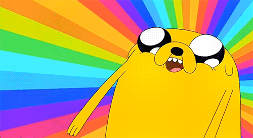
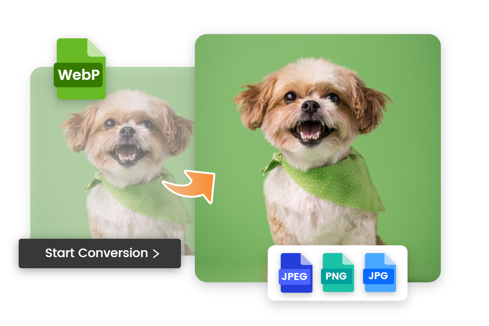
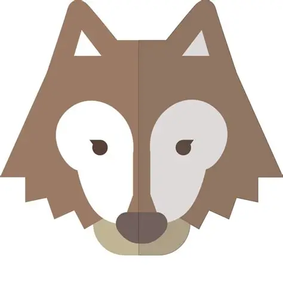

Content
Super cool content goes here
Super cool content goes here
Joint Photographic Experts Group
Komprimerat bildformat.
Fördel: liten filstorlek. Nackdel: kvalitetsförlust.

Portable Network Graphics
Komprimerat utan kvalitetsförlust .
Fördel: transparent bakgrund. Nackdel: större fil.

Graphics Interchange Format
Stöd för enkla animationer.
Fördel: rörelse. Nackdel: 256 färger.

Web Picture format
Modern komprimering med hög kvalitet.
Fördel: liten fil. Nackdel: äldre webbläsare saknar stöd.

Scalable Vector Graphics
Vektorgrafik kan skalas utan kvalitetsförlust.
Fördel:skarp i alla storlekar.Nackdel:den är inte bra för foton.
